Représentation personnalité humaine au cours des avis du CCNE
1 Retour aux choix
2 Représentation de la personnalité humaine au cours des avis
2.1 Vivant vs Morale
2.1.1 Proportions ‘Vivant’ vs ‘Personne/Individu’ par avis
2.1.1.1 Proportions au sein des phrases d’intérêt
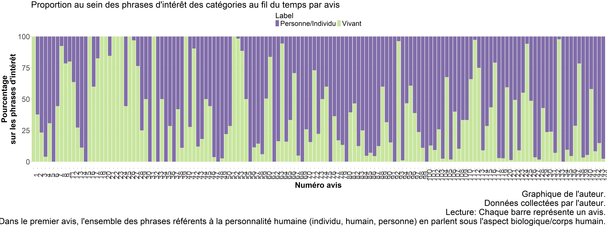
2.1.1.2 Proportions au sein de l’entiéreté des phrases d’un avis
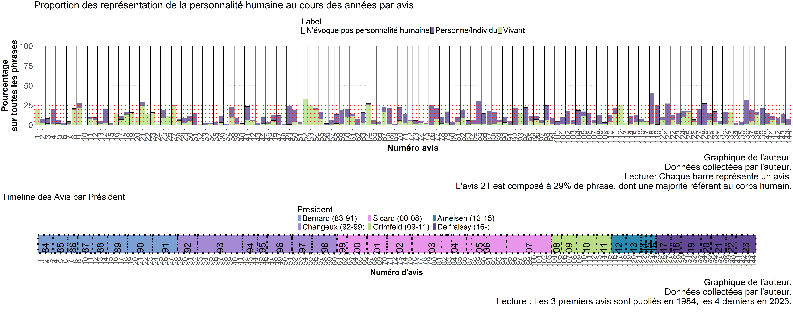
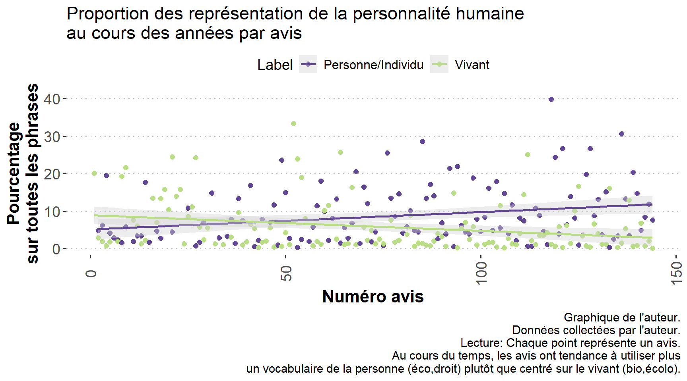
2.1.2 Proportions ‘Vivant’ vs ‘Personne/Individu’ regroupées par année
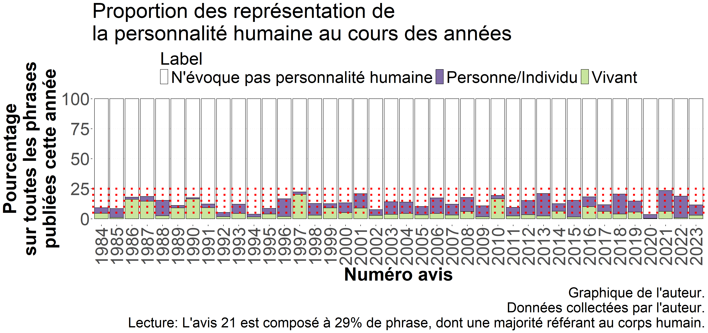
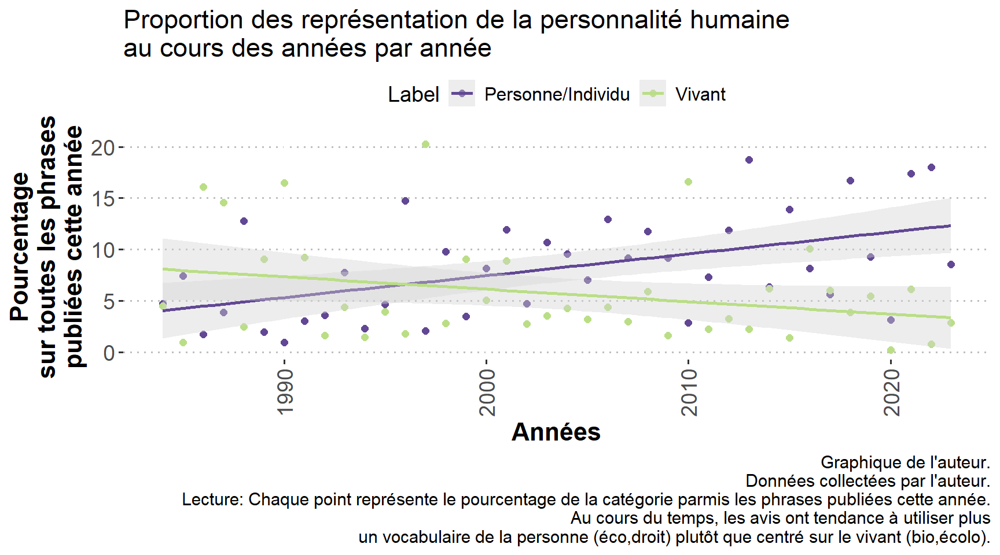
2.2 Tendance au sein du biologique et du moral
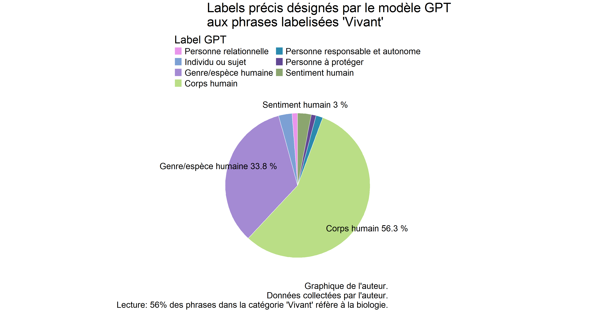
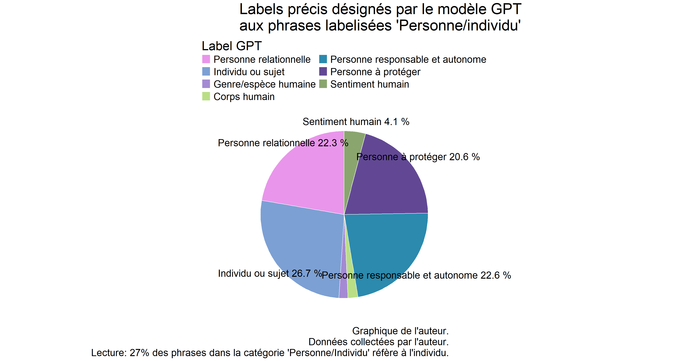
2.4 GPT 6 classes
2.4.1 Tableaux récapitulatifs
2.4.1.1 Tableau des pourcentages d’avis contenant un certain traitement de la personnalité humaine au cours des mandats
| Label | Bernard (83-91) | Changeux (92-99) | Sicard (00-08) | Grimfeld (09-11) | Ameisen (12-15) | Delfraissy (16-) |
|---|---|---|---|---|---|---|
| Corps humain | 85.7 | 68.8 | 69.8 | 66.7 | 88.9 | 65 |
| Genre/espèce humaine | 53.6 | 46.9 | 69.8 | 75.0 | 88.9 | 95 |
| Individu ou sujet | 50.0 | 65.6 | 88.4 | 75.0 | 100.0 | 95 |
| Personne juridique (protection/responsabilité) | 64.3 | 75.0 | 90.7 | 91.7 | 88.9 | 95 |
| Personne relationnelle | 39.3 | 50.0 | 65.1 | 100.0 | 88.9 | 80 |
| Sentiment humain | 25.0 | 18.8 | 53.5 | 91.7 | 66.7 | 75 |
| Cite toutes les catégories | 10.7 | 9.4 | 30.2 | 33.3 | 33.3 | 45 |
| Cite 5 des 6 catégories | 28.6 | 28.1 | 55.8 | 66.7 | 88.9 | 75 |
| Cite 4 des 6 catégories | 42.9 | 50.0 | 74.4 | 100.0 | 100.0 | 85 |
| Cite 3 des 6 catégories | 60.7 | 56.2 | 81.4 | 100.0 | 100.0 | 100 |
| Cite 2 des 6 catégories | 78.6 | 81.2 | 95.3 | 100.0 | 100.0 | 100 |
| a Tableau de l’auteur. Données de l’auteur. Champ : Ensembles des phrases sur la personnalité humaines dans les 144. Lecture : Durant le mandat de Bernard, 85.7% des avis contiennent au moins une phrase sur le corps humain. On peut conclure de l’augmentation de chaque catégorie, une diversification des rhétoriques. |
2.4.1.2 Tableau des pourcentages de phrases contenant un certain traitement de la personnalité humaine au cours des mandats
| Label | Bernard (83-91) | Changeux (92-99) | Sicard (00-08) | Grimfeld (09-11) | Ameisen (12-15) | Delfraissy (16-) |
|---|---|---|---|---|---|---|
| Corps humain | 45.3 | 21.9 | 19.7 | 42.0 | 13.5 | 8.5 |
| Genre/espèce humaine | 12.4 | 14.9 | 9.6 | 10.1 | 10.0 | 16.7 |
| Individu ou sujet | 14.9 | 16.5 | 18.5 | 13.3 | 16.8 | 22.4 |
| Personne juridique (protection/responsabilité) | 17.8 | 34.1 | 32.7 | 18.8 | 42.1 | 31.4 |
| Personne relationnelle | 7.2 | 10.7 | 13.3 | 8.0 | 14.6 | 16.6 |
| Sentiment humain | 2.2 | 1.9 | 6.4 | 6.8 | 3.0 | 4.0 |
| a Tableau de l’auteur. Données de l’auteur. Champ : Ensembles des phrases sur la personnalité humaines dans les 144. Lecture : Durant le mandat de Bernard, 45.9% des phrases publiées portent sur le corps humain. |
2.4.1.3 Tableau des pourcentages de phrases contenant un certain traitement de la personnalité humaine au cours des mandats sur l’ensemble des phrases
| Label | Bernard (83-91) | Changeux (92-99) | Sicard (00-08) | Grimfeld (09-11) | Ameisen (12-15) | Delfraissy (16-) |
|---|---|---|---|---|---|---|
| Corps humain | 5.78 | 2.55 | 2.72 | 6.09 | 2.40 | 1.34 |
| Genre/espèce humaine | 1.58 | 1.74 | 1.32 | 1.47 | 1.77 | 2.62 |
| Individu ou sujet | 1.90 | 1.92 | 2.55 | 1.92 | 2.98 | 3.50 |
| Personne juridique (protection/responsabilité) | 2.27 | 3.97 | 4.50 | 2.72 | 7.48 | 4.92 |
| Personne relationnelle | 0.91 | 1.25 | 1.83 | 1.15 | 2.59 | 2.60 |
| Sentiment humain | 0.28 | 0.22 | 0.88 | 0.99 | 0.53 | 0.63 |
| a Tableau de l’auteur. Données de l’auteur. Champ : Ensembles des phrases dans les 144. Lecture : Durant le mandat de Bernard, 5.8% des phrases publiées portent sur le corps humain. |
2.4.2 Proportions fines des personnalités humaines par avis
2.4.2.1 Proportions au sein des phrases d’intérêt
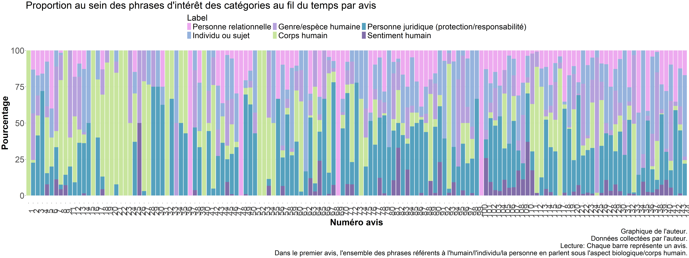
2.4.2.2 Proportion sur l’ensemble des phrases de l’avis
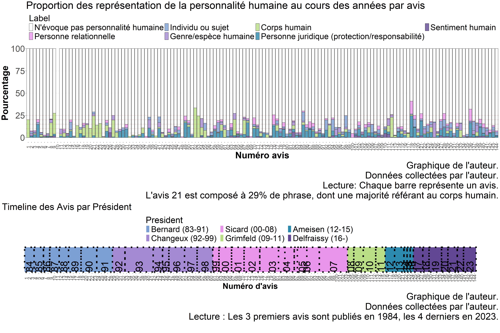
2.4.3 Proportions fines de la personnalité humaine regroupées par année, sur l’ensemble des phrases publiées
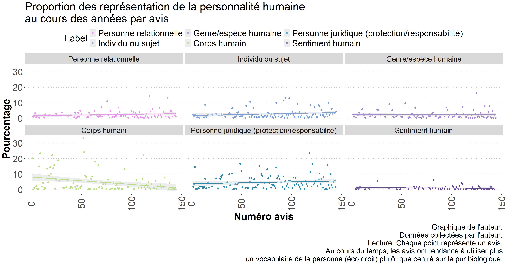
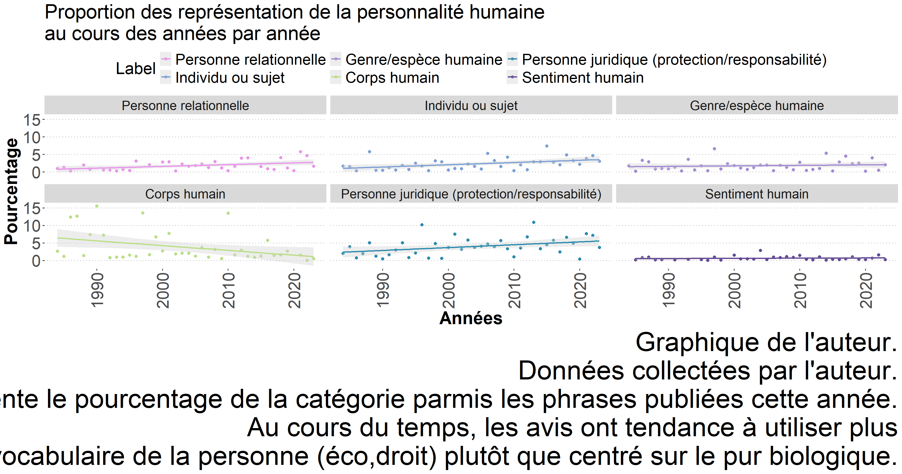